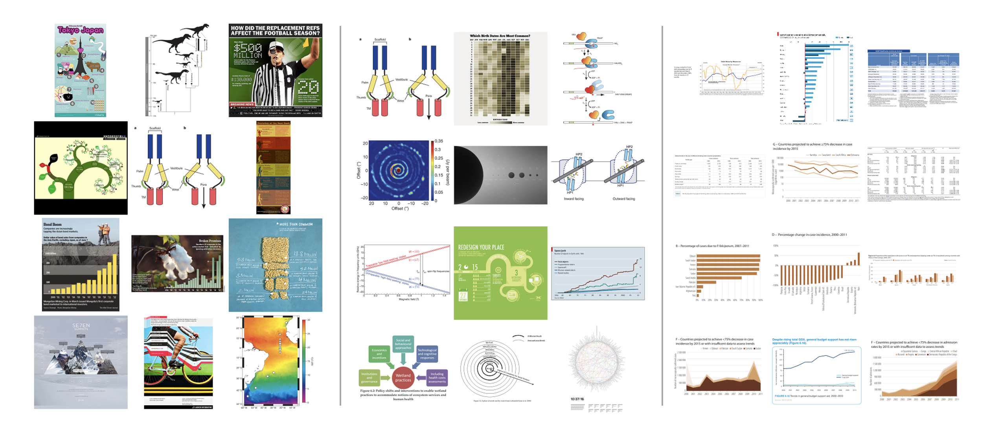
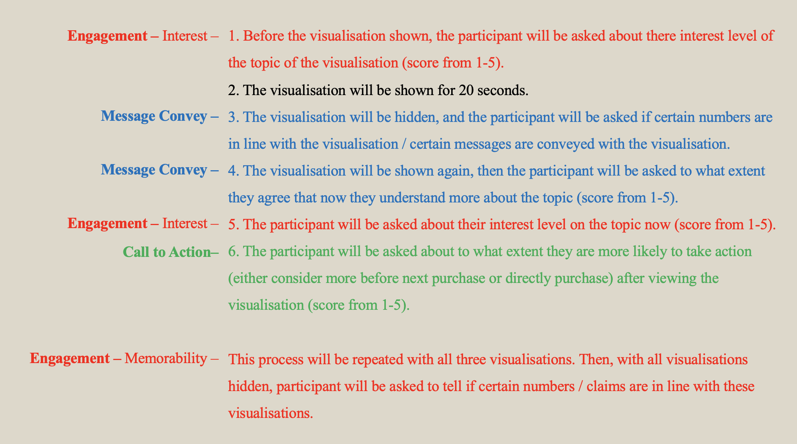

Introduction to Affective Data Visualisation Research
The idea of “emotional appeals in visualisation” (Kostelnick, 2016), “affects/pathos in visualisations” (Campbell, 2018) or “affective visualisations” (Gough, de Berigny Wall and Bednarz, 2014) are emerging in recent years. Those concepts have been used in studying the objectivity / subjectivity of visualisations, the effectiveness of certain visual elements and et cetera.
With all those concepts and researches scattered in different areas related to visualisations, Lan, Wu and Cao (2024) have conducted a systematic review of the existing researches. Within their review, one thread takes my attention: emotion as a result of visualization design.
In this project, Affective Data Visualisation is defined as data visualisation that are able to conveyance messages with the help of emotions and will be put under examination that whether and how they affect the effectiveness of message.
As for the research question, I want to test if affective design is also helpful in the marketing / promotion scenario, since no research has been on this till now (August 2024).
Research Method
Research Question
With literature review, three main methods are identified to be most likely to be effective as affective data visualisation methods:
- Zoom-in (Personalised) Design
- Affective Colour Scheme
- Realistic / Metaphorical Imagery
To test whether those methods are effective when applied to marketing / promotion scenario, I designed several pairs of affective / non-affective (“normal”) data visualisations and conducted an AB test through interview.
As for the aspects to test if the affective data visualisation is effective, three main aspects are indentified through literature review:
- Message conveyance
- Audience Engagement
- Call to Action
Interview Structure
For the interview, the audience will be either shown the three “normal” version of data visualisations or the three affective ones. Each of the data visualisations will be shown will questions asked.
- Before the visualisation shown, the participant will be asked about their interest level of the topic of the visualisation (score from 1-5).
- The visualisation will be shown for 20 seconds.
- The visualisation will be hidden, and the participant will be asked if certain numbers are in line with the visualisation / certain messages are conveyed with the visualisation.
- The visualisation will be shown again, then the participant will be asked to what extent they agree that now they understand more about the topic (score from 1-5).
- The participant will be asked about their interest level on the topic now (score from 1-5).
- The participant will be asked about to what extent they are more likely to take action (either consider more before next purchase or directly purchase) after viewing the visualisation (score from 1-5).
This process will be repeated with all three visualisations. Then, with all visualisations hidden, participant will be asked to tell if certain numbers / claims are in line with these visualisations.
With these steps, all three aspects of effectiveness of affective data visualisation will be tested:

Research Result
Click Here for Research Results.